A package to generate forest plots.
forplot contains two main functions to build a forest plot.
genfobj requires a layout, specifying the elements to be plotted and a data frame (dat) with the data to be plotted and produces a list of class fobj.
The fobj can then be modified using a series of helper functions or directly by changing the list.
plotfobj then produces the forest plot from the fobj
The package includes two example datasets one with continous (forplotdata) and one with binary variables (forplotdata_prop).
data(forplotdata)
forplotdata
#> vlabel n1 n2 n3 n4 beta_format beta
#> 1 out1 100 5.1 (0.9) 100 5.5 (1.0) -0.35 (-0.61 to -0.09) -0.35330456
#> 2 out2 100 5.0 (1.0) 100 5.6 (1.0) -0.52 (-0.80 to -0.24) -0.52192832
#> 3 out3 100 5.0 (1.2) 100 5.5 (1.0) -0.49 (-0.79 to -0.20) -0.49461488
#> 4 out4 100 4.8 (1.1) 100 5.5 (1.1) -0.70 (-1.00 to -0.40) -0.69983471
#> 5 out5 100 5.0 (1.1) 100 5.5 (1.1) -0.49 (-0.79 to -0.20) -0.49398774
#> 6 out6 100 5.0 (1.0) 100 5.3 (1.0) -0.36 (-0.64 to -0.08) -0.35838850
#> 7 out7 100 5.2 (1.1) 100 5.3 (0.9) -0.08 (-0.36 to 0.19) -0.08429217
#> 8 out8 100 5.1 (1.0) 100 5.5 (1.1) -0.40 (-0.70 to -0.11) -0.40311974
#> 9 out9 100 4.9 (1.0) 100 5.4 (1.2) -0.51 (-0.81 to -0.20) -0.50709366
#> 10 out10 100 5.1 (1.1) 100 5.4 (1.1) -0.29 (-0.58 to 0.01) -0.28700316
#> beta_lci beta_uci p1
#> 1 -0.6122615 -0.094347655 0.008
#> 2 -0.8044964 -0.239360217 0.000
#> 3 -0.7938491 -0.195380711 0.001
#> 4 -1.0035691 -0.396100319 0.000
#> 5 -0.7928756 -0.195099871 0.001
#> 6 -0.6395674 -0.077209590 0.013
#> 7 -0.3567376 0.188153237 0.542
#> 8 -0.6955442 -0.110695309 0.007
#> 9 -0.8110643 -0.203123036 0.001
#> 10 -0.5822050 0.008198722 0.057
data(forplotdata)
forplotdata_prop
#> vlabel n1 n2 n3 n4 prop1 prop2 beta_format beta
#> 1 out1 100 48 (48%) 100 40 (40%) 0.48 0.40 8.0% (-6.7 to 22.7%) 0.08
#> 2 out2 100 38 (38%) 100 37 (37%) 0.38 0.37 1.0% (-13.4 to 15.4%) 0.01
#> 3 out3 100 47 (47%) 100 47 (47%) 0.47 0.47 0.0% (-13.8 to 13.8%) 0.00
#> 4 out4 100 54 (54%) 100 41 (41%) 0.54 0.41 13.0% (-1.7 to 27.7%) 0.13
#> 5 out5 100 45 (45%) 100 40 (40%) 0.45 0.40 5.0% (-9.7 to 19.7%) 0.05
#> 6 out6 100 51 (51%) 100 38 (38%) 0.51 0.38 13.0% (-1.7 to 27.7%) 0.13
#> 7 out7 100 47 (47%) 100 36 (36%) 0.47 0.36 11.0% (-3.6 to 25.6%) 0.11
#> 8 out8 100 44 (44%) 100 46 (46%) 0.44 0.46 -2.0% (-16.8 to 12.8%) -0.02
#> 9 out9 100 53 (53%) 100 33 (33%) 0.53 0.33 20.0% (5.6 to 34.4%) 0.20
#> 10 out10 100 54 (54%) 100 38 (38%) 0.54 0.38 16.0% (1.4 to 30.6%) 0.16
#> beta_lci beta_uci p1
#> 1 -0.06714147 0.2271415 0.319
#> 2 -0.13418240 0.1541824 1.000
#> 3 -0.13834069 0.1383407 1.000
#> 4 -0.01723947 0.2772395 0.089
#> 5 -0.09684704 0.1968470 0.567
#> 6 -0.01656604 0.2765660 0.088
#> 7 -0.03571955 0.2557195 0.151
#> 8 -0.16786783 0.1278678 0.887
#> 9 0.05560305 0.3443969 0.007
#> 10 0.01364509 0.3063549 0.033There are text columns n[1-4] with the number of observations and descriptives for each arm (either mean (sd) or n(%)), the fomratted treatment effect (beta_format) and the p-value (p1), and three numeric columns with to draw the forest (beta, beta_lci and beta_uci).
In the forplotdata_prop there are two further numeric columns with the proportion in each arm (prop1, prop2) to draw a srip plot.
genfobj
`genfobj’ requires the input of a layout and a data frame dat.
layout must be a character vector with elements t (text), f (forest), s[1-9] (strip), or b (boxplot).
For each t element, dat must contain a single column, for each f element three columns (point estimate, lower confidence limit, upper confidence limit, in that order), and, for each s[1-9] the number of columns indicated in [].
The order of the columns must correspond to the layout.
A b element does not need a column in dat but the specifcation of bpdat, a data frame in a long format with columns out (the outcome value), var (the outcome variable, safest as a factor to preserve the order in the plot), and arm (the treatment arm, safest as a factor to preserve the order in the plot)
We want to use forplotdata and generate a plot with a text columns with the label, the descriptives, the formatted effect and the p-value, and a forest for the beta.
The prodcued fobj is a list of length 6 with class fobj. It includes those elements:
genfobj which has been given or assumed by default (i.e. layout, lheights, lwidths, y.at, ylim)
class(fobj)
#> [1] "fobj" "list"
names(fobj)
#> [1] "dat" "bpdat" "setup" "items" "header"
fobj$setup
#> $layout
#> [1] "t" "t" "t" "t" "t" "t" "f" "t"
#>
#> $lwidths
#> [1] 1 1 1 1 1 1 1 1
#>
#> $lheights
#> [1] 0.1 1.0 0.1
#>
#> $y.at
#> [1] 1 2 3 4 5 6 7 8 9 10
#>
#> $ylim
#> [1] 0.55 10.45
length(fobj$items)
#> [1] 8By default, text items include these options:
names(fobj$item[[1]])
#> [1] "type" "vname" "plot" "text"
fobj$item[[1]]
#> $type
#> [1] "t"
#>
#> $vname
#> [1] "vlabel"
#>
#> $plot
#> $plot$x
#> [1] 0
#>
#> $plot$type
#> [1] "n"
#>
#> $plot$xlim
#> [1] 0 1
#>
#> $plot$ylim
#> [1] 0.55 10.45
#>
#> $plot$yaxt
#> [1] "n"
#>
#> $plot$ylab
#> [1] ""
#>
#> $plot$xlab
#> [1] ""
#>
#> $plot$axes
#> [1] FALSE
#>
#> $plot$xaxs
#> [1] "i"
#>
#> $plot$yaxs
#> [1] "i"
#>
#>
#> $text
#> $text$x
#> [1] 0.5
#>
#> $text$y
#> [1] 1 2 3 4 5 6 7 8 9 10
#>
#> $text$labels
#> [1] "out1" "out2" "out3" "out4" "out5" "out6" "out7" "out8" "out9"
#> [10] "out10"
#>
#> $text$adj
#> [1] 0.5 0.5type is the item type, vname is the variable in dat the item corresponds to, plot and text are the options used for plotting with base r.
The f items are more complex, including options for axis, points and arrows of the fores plots.
names(fobj$items[[which(fobj$setup$layout=="f")]])
#> [1] "type" "vname" "plot" "axis" "points" "arrows"
fobj$items[[which(fobj$setup$layout=="f")]]$type
#> [1] "f"
fobj$items[[which(fobj$setup$layout=="f")]]$vname
#> [1] "beta"For the variable name, the first of the three variables used to specify the forest is used. Options for axis, point and arrows can be changed using helper functions (or directly in the list). Examples or shown below.
The fobj can be plotted using plotfobj
plotfobj(fobj)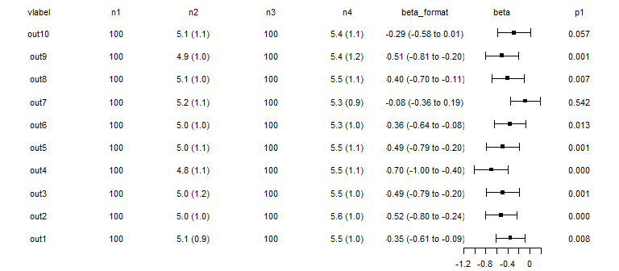
And with a bit nicer widths, which can be given as options in genfobj or just be changing the fobj:
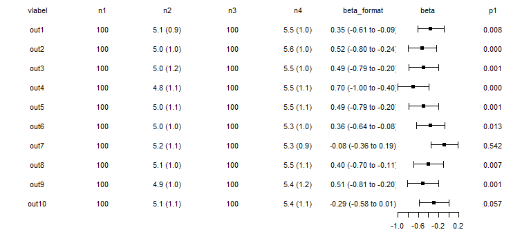
Gridlines and stripes can be added with helper functions gridlines and stripes, which generate further elements in the fobj:
fobj<-gridlines(fobj)
fobj<-stripes(fobj)
names(fobj)
#> [1] "dat" "bpdat" "setup" "items" "header" "gridlines"
#> [7] "stripes"
plotfobj(fobj)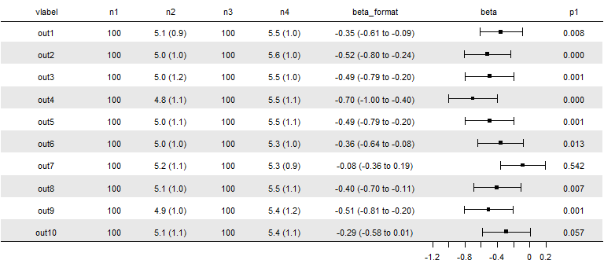
All items, gridlines and stripes can be modified using helper functions or within the list directly.
For t items helper function t_options allows to use all options used in R ?graphics::text function. That can be done for a specific t item by using the number or column name of the item, or for all (by keeping item=NULL):
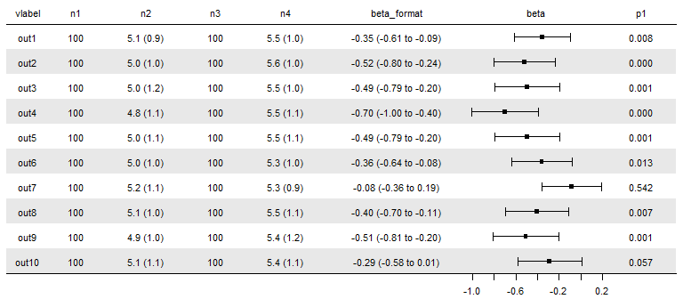
For f items there are several helper function to modify the options for the different elements: f_axis, f_points, f_arrows. Also here, all options from ?graphics::axis, ?graphics::points and ?graphics::arrows can be used. As we do only have one forest item, we do not have specify the item.
fobj<-f_axis(fobj=fobj, at=seq(-1,0.2, by=0.4), labels=seq(-1,0.2, by=0.4), tck=-0.03, mgp = c(2,0.5,0))
fobj<-f_points(fobj=fobj, pch=16, cex=1.5)
plotfobj(fobj)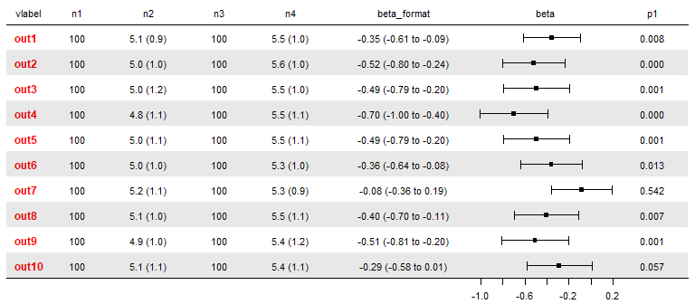
With f_refline, a reference line can be added and with f_direction a label for the direction below the axis. Note that the footer height has to be increased to fit the direction label.
fobj<-f_refline(fobj, x = c(0, 0))
fobj<-f_direction(fobj, text = "A better B better", line=1.6)
fobj$setup$lheights[3]<-0.15
plotfobj(fobj)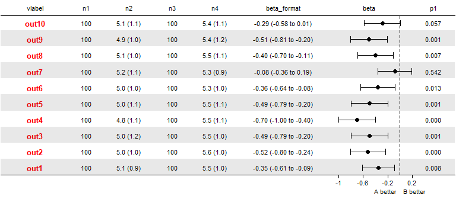
To remove an added item, it can be set to NULL (or a new fobj could be generated):
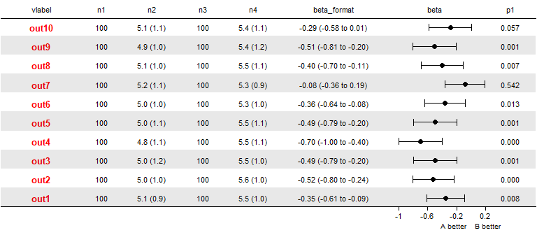
By default a header with the columns names is used and stored in the header element of fobj, which is a list of length 1 with these elements.
fobj$header
#> [[1]]
#> [[1]]$hlayout
#> [1] 1 2 3 4 5 6 7 8
#>
#> [[1]]$text
#> [[1]]$text$x
#> NULL
#>
#> [[1]]$text$y
#> [1] 0.5
#>
#> [[1]]$text$labels
#> [1] "vlabel" "n1" "n2" "n3" "n4"
#> [6] "beta_format" "beta" "p1"
#>
#> [[1]]$text$adj
#> [1] 0.5 0.5The header function can be used to modify the options using all options from ?graphics::text. As an extra element, the hlayout can be used to merge columns, i.e. to print a label over more than one column. And more than one header row can be specified using headernr, leading to a list of length > 1.
Let’s first just use different names, also including a line separator. Note that an empty character has to be included to leave column 1 and 8 empty. And the y is also modified to place the label it a bit higher.
fobj<-header(fobj=fobj,
labels = c("","Arm A\nN","Arm A\nmean (sd)","Arm B\nN","Arm B\nmean (sd)",
"Mean difference\n95% CI","","P-value"),
y=0.6)
plotfobj(fobj)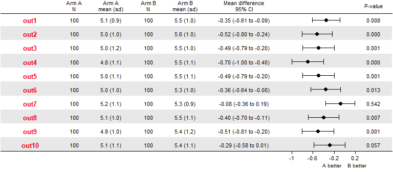
We could also merge the label for the effect over the format and forest columns. We would then change the layout to include one label twice. And remove the empty label for the forest column.
fobj<-header(fobj=fobj, hlayout=c(1,2,3,4,5,6,6,7),
labels = c("","Arm A\nN","Arm A\nmean (sd)","Arm B\nN","Arm B\nmean (sd)",
"Mean difference 95% CI","P-value"))
plotfobj(fobj)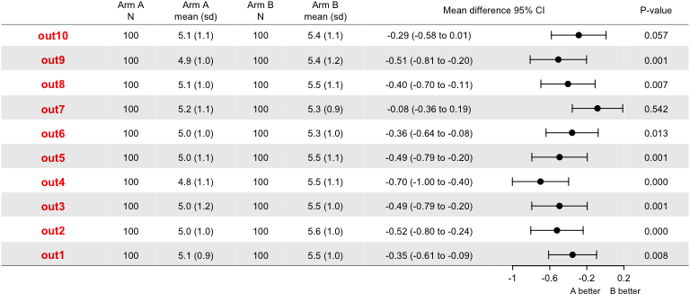
In order to also merge to arm labels, we would need to header rows using option headernr, leading to a header list with length 2: As before we can use further ?graphics::text options.
fobj<-header(fobj=fobj, hlayout = c(1,2,2,3,3,4,4,5), headernr = 1,
labels=c("","Arm A","Arm B","Mean diff (95% CI)","P-value"),
y=0.9)
fobj<-header(fobj=fobj, hlayout = c(1,2,3,4,5,6,7,8), headernr = 2,
labels=c("","N","Mean (sd)","N","Mean (sd)","","",""),y=0.3)
fobj$header
#> [[1]]
#> [[1]]$hlayout
#> [1] 1 2 2 3 3 4 4 5
#>
#> [[1]]$text
#> [[1]]$text$x
#> NULL
#>
#> [[1]]$text$y
#> [1] 0.9
#>
#> [[1]]$text$labels
#> [1] "" "Arm A" "Arm B"
#> [4] "Mean diff (95% CI)" "P-value"
#>
#> [[1]]$text$adj
#> [1] 0.5 0.5
#>
#>
#>
#> [[2]]
#> [[2]]$hlayout
#> [1] 1 2 3 4 5 6 7 8
#>
#> [[2]]$text
#> [[2]]$text$x
#> NULL
#>
#> [[2]]$text$y
#> [1] 0.3
#>
#> [[2]]$text$labels
#> [1] "" "N" "Mean (sd)" "N" "Mean (sd)" ""
#> [7] "" ""
#>
#> [[2]]$text$adj
#> [1] 0.5 0.5
plotfobj(fobj)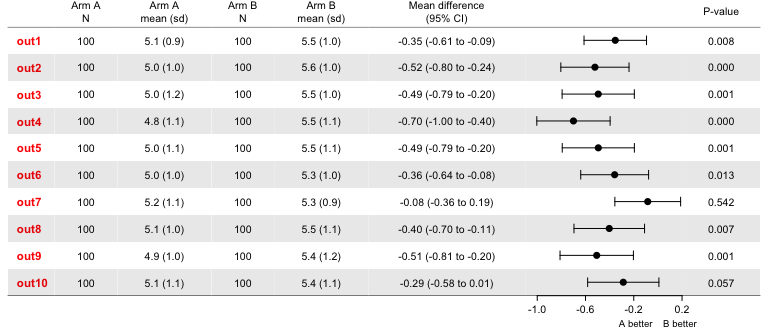
For a more in-depth presentation of the raw data in each group, a boxplot can be added. It depends on the input of the raw data as a data frame in a long format with columns:
Boxplot layout can be controled via helper functions b_plot and b_axis using all options available for ?graphics::plot and ?graphics::axis.
fobj<-genfobj(dat = forplotdata, bpdat = forplotdata_bp,
layout = c("t","t","t","t","t","b","t","f","t"),
lwidths = c(0.6,0.4,0.6,0.4,0.6,1,1,1,0.5))
plotfobj(fobj)
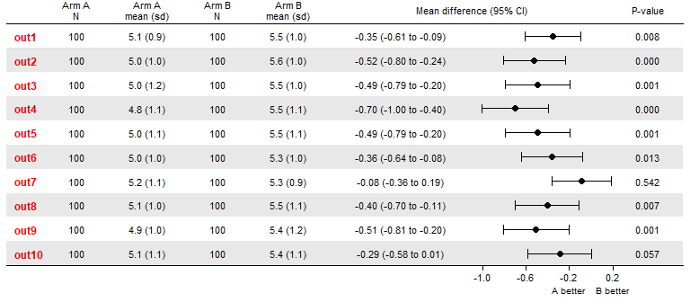
Adding header gridlines and stripes:
fobj<-gridlines(fobj)
fobj<-stripes(fobj)
fobj<-header(fobj=fobj, hlayout = c(1,2,2,3,3,4,5,5,6), headernr = 1,
labels=c("","Arm A","Arm B","","Mean diff (95% CI)","P-value"),
col = c(1,"red","blue",1,1),
y=0.9)
fobj<-header(fobj=fobj, hlayout = c(1,2,3,4,5,6,7,8,9), headernr = 2,
labels=c("","N","Mean (sd)","N","Mean (sd)","","","",""),y=0.3)
plotfobj(fobj)
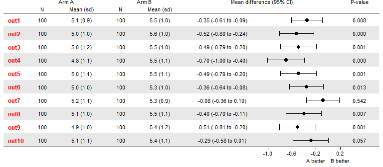
For binary outcomes and in particular for serious adverse event reporting a graphical representation of the proportion in both arms has been recommended.
A strip plot for the proportions can be added via s[1-9], where the number would indicate the number of points in the strip plot and the number of columns in the dat (usually two if there are two treatment arms). The “s” items then contains several points elements.
For example:
fobj<-genfobj(dat = forplotdata_prop,
layout = c("t","t","t","t","t","s2","t","f","t"),
lwidths = c(0.6,0.4,0.6,0.4,0.6,1.0,1.2,1,0.5))
plotfobj(fobj)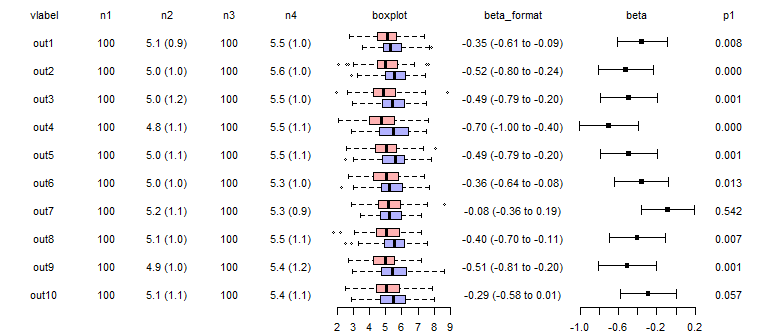
Options can be modified via s_axis, s_hline and s_points using all options available for using all options available for ?graphics::axis, ?graphics::abline and ?graphics::points.
Note that for points, each sub-item has can be specified separately using pointnr (e.g. to specify colors).
Left and right borders can be added via s_borders.
fobj<-s_axis(fobj=fobj, xlim = c(0,1),
at = seq(0,1,by=0.25), labels = seq(0,100,by=25))
fobj<-s_points(fobj=fobj, pch = 16, cex=1.5)
fobj<-s_points(fobj=fobj, pointnr = 1, col = "red")
fobj<-s_points(fobj=fobj, pointnr = 2, col = "blue")
fobj<-s_borders(fobj)
fobj<-gridlines(fobj)
plotfobj(fobj)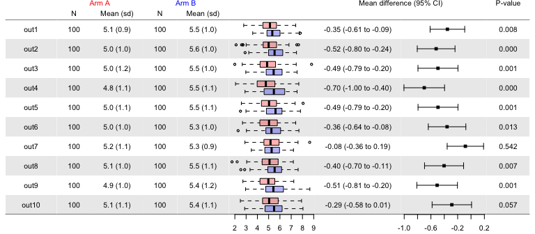